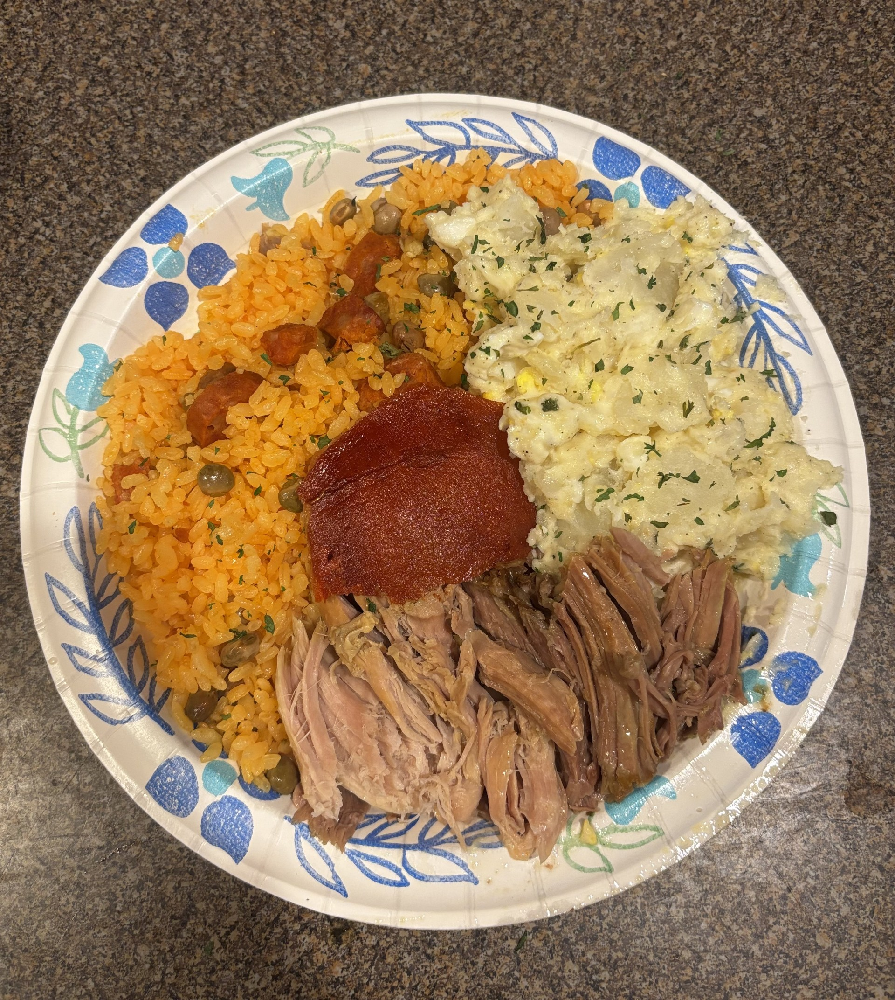

|
|
|
|
|---|---|---|
| Pernil | Arroz Con Gandules | Potato Salad |
Are you curious about Latin food? Do you want to make the perfect Puerto Rican Holiday meal? Well you've come to the right place! Welcome to Laila's Latin Cusine where I give to you the recipies to the three staples of a Puerto Rican Holiday meal.
|  |
***All pernil Images are from linked video***